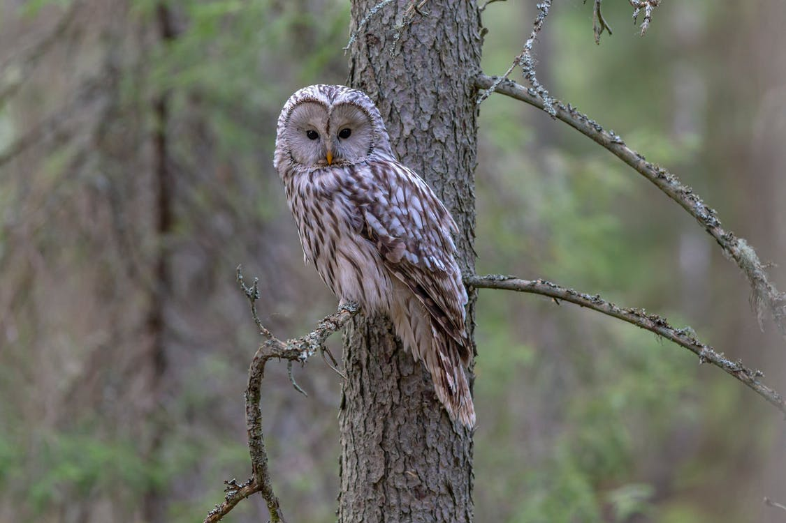

Fun Facts about Owls
Owls are some quirky looking birds. Honestly they are my favorite because they are some of the most unique birds out there. Did you know that the barn owl is found on every single continent except Antartica! Most owls are entirely Nocturnal, thats why seeing a wild one is such a sight! They truly are majestic creatures. one of the largest Owls is called the Eurasian eagle-owl it has a wingspan of five to six and a half feet!
Different types of Owls
- Great Horned Owl
- Barn Owl
- Snowy Owl
- Great Grey Owl
- Burrowing Owl